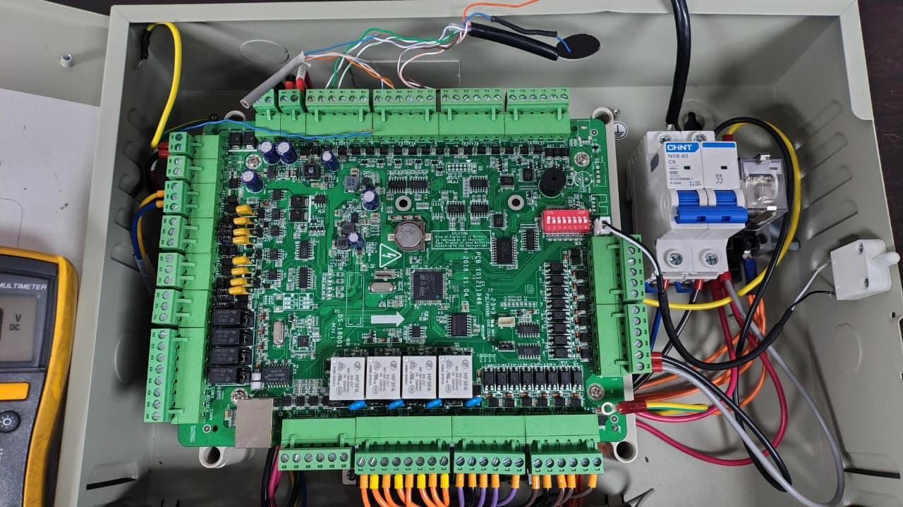
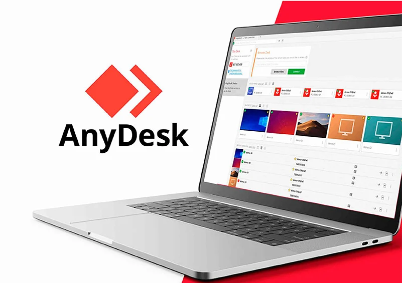

Catálogo de Proyectos y Casos Técnicos 8 Módulos Interactivos
Haz clic en cualquier tarjeta para abrir su vista interactiva con videos, visores 3D o aplicaciones en vivo

Workflows & Web IA
Portal interactivo SEKUNET 24/7, NEXTIME Pro y herramientas de optimización con IA + criterio humano.

App Android
Aplicación móvil ultraligera para control y auditoría de inventario escolar en tiempo real.

Liderazgo & Formación
Entrenamiento a compañeros e integradores en Hikvision, ZKTeco, MikroTik e integración multimarca.

Laboratorio & Procesos
Diagnóstico clínico de hardware, control de garantías y estandarización de pruebas.

Visor STL 3D
Diseño y fabricación aditiva de herramientas y soportes con Anycubic Kobra 2 NEO.

Blender & CAD
Modelado conceptual, planos de simulación y renders fotorrealistas de producto para SEKUNET.

Redes & Asistencia
Rastreo profundo de redes CCTV, actualización de firmware y resolución crítica a distancia.

Hardware & TI
Optimización de estaciones de trabajo, proyectores multimedia y despliegue de sistemas operativos.